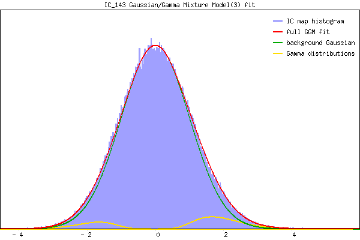

IC_143 Mixture Model fit
Means : 0.000000 1.926983 -1.852977
Vars : 1.000000 0.500860 0.363550
Prop. : 0.938830 0.041219 0.019952
This page produced automatically by MELODIC Version 3.15 - a part of FSL - FMRIB Software Library.